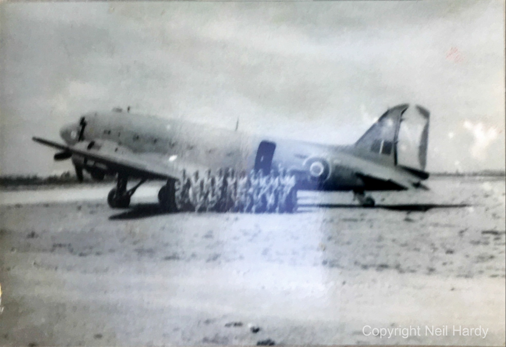
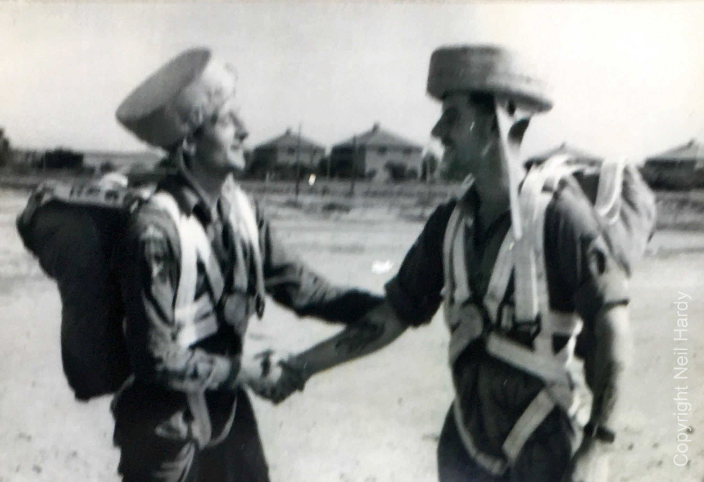
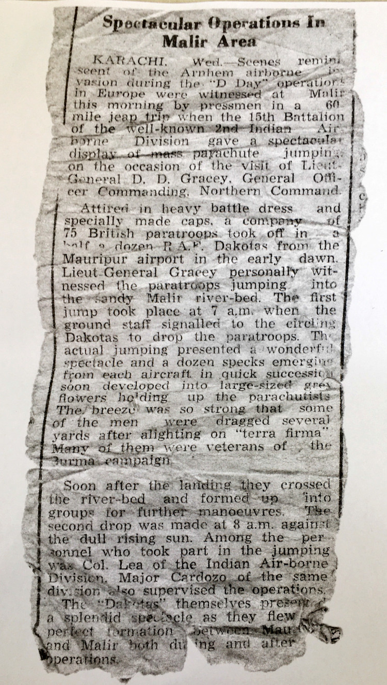
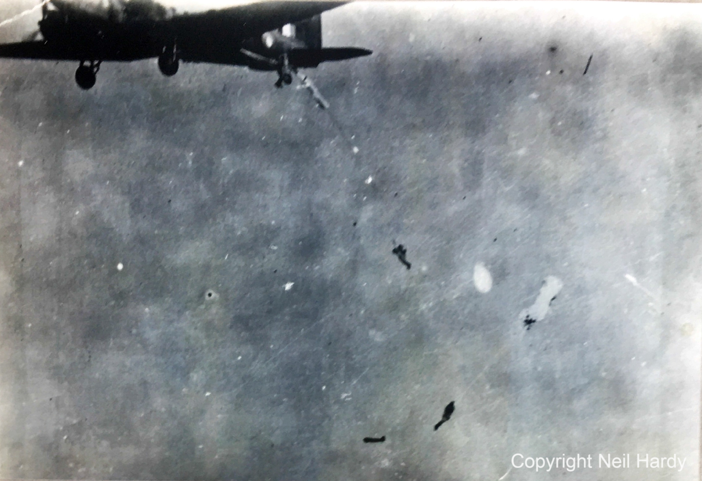
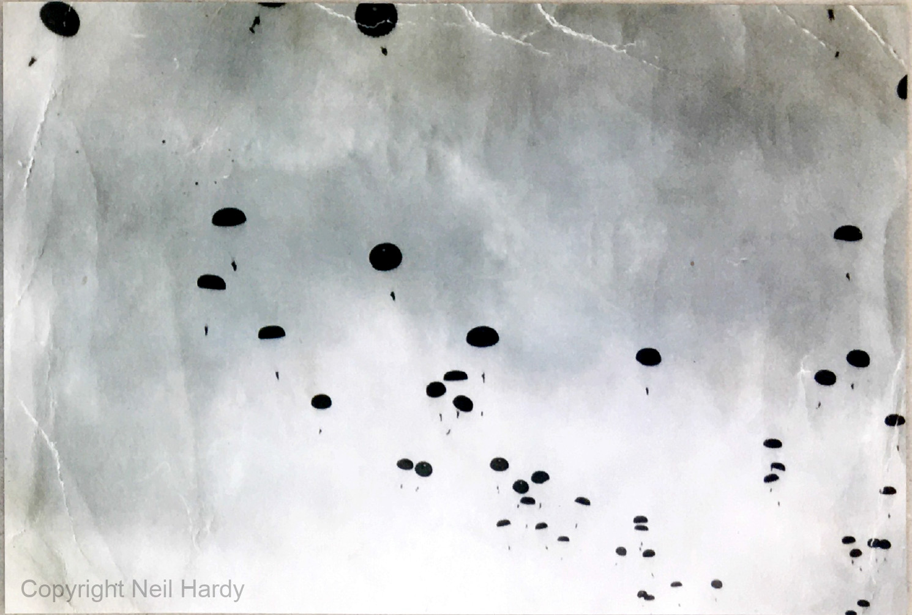
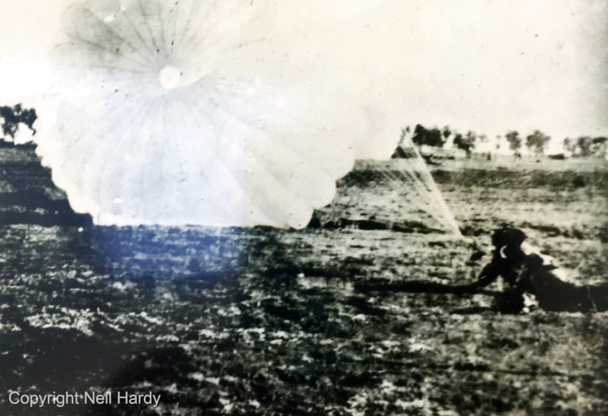
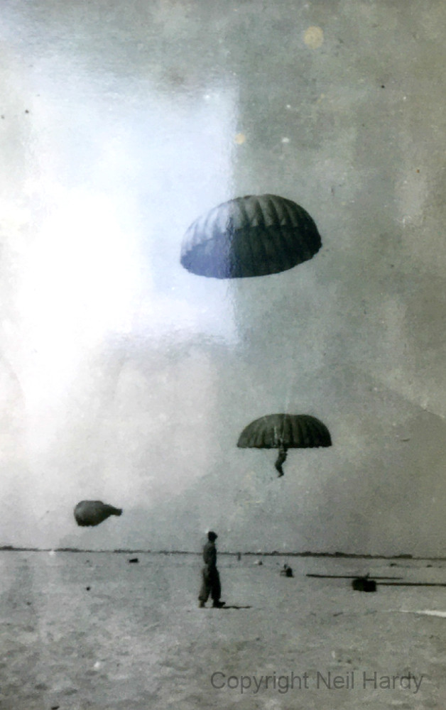

The 15th (British) Parachute Battalion, India 1945
A blog about the 15th (British) Parachute Battalion in India, 1945, including details of a display jump near Karachi.
A blog about the 15th (British) Parachute Battalion in India, 1945, including details of a display jump near Karachi.

The 15th (British) Parachute Battalion was formed at Malthone in 1945 from a nucleus of volunteers from the 1st Battalion The King’s Regiment which had previously had a role with the Chindits operations (made up to strength by a draft from 13th Kings before that Battalion was disbanded).
It belonged to the 77th Indian Brigade, part of the 44th Indian Airborne Division. This new unit was preparing for the challenges of re-taking Malaya from the Japanese (paradata.org.uk, 2022)
Parachute training commenced at Chaklala, near Rawalpindi, from March 1945.
Neil Hardy got in touch with me after reading the blog I wrote about my grandad's time serving in Burma, and has shared some photos of his late father Dennis parachuting with the Battalion in 1945. All photos remain the copyright of Neil.


Neil also shared a newspaper article from the time:
Spectacular Operation in Malir Area
KARACHI. Scenes reminiscent of the Arnhem airborne invasion during the “D Day” operations in Europe were witnessed at Malir this morning by pressmen in a 60 mile jeap trip when the 15th Battalion of the well-known 2nd Indian Airborne Division gave a spectacular display of mass parachute jumping on the occasion of the visit of Lieut-General D. D. Gracey, General Officer Commanding, Northern Command.
Attired in heavy battle dress and specially made caps, a company of 75 British paratroops took off in a half a dozen R.A.F Dakotas from the Mauripur airport in the early dawn. Lieut-General Gracey personally witnessed the paratroops jumping into the sandy Malir river-bed. The first jump took place at 7am when the ground staff signalled to the circling Dakotas to drop the paratroops. The actual jumping presented a wonderful spectacle and a dozen specks emerging from each aircraft in quick succession soon developed into large-sized grey flowers holding up the parachutists. The breeze was so strong that some of the men were dragged several yards after alighting on “terra firma”. Many of them were veterans of the Burma campaign.
Soon after the landing they crossed the river-bed and formed up into groups for further manoeuvres. The second drop was made at 8am against the dull rising sun. Among the personnel who took part in the jumping was Col. Lea of the Indian Air-borne Division. Major Cardozo of the same division also supervised the operations.
The “Dakotas” themselves presented a splendid spectacle as they flew in perfect formation between Mauripur and Malir both during and after the operations.



Thomas Edward Charles Tegg shared his story of parachute training with BBC’s WW2 People’s War:
“I volunteered to join the Parachute Regiment and was posted to Rawalpindi, which was the training centre at that time. There followed 7–8 days of intensive ground training in which we learnt about the parachute, how it worked, how to use it, and more importantly, how to land safely. I think more time was spent on landing technique than any other aspect of the parachute, to ensure as far as possible, a safe landing on the ground.
"The second week started with two acclimatisation flights, to get us used to flying and to try and minimise the air sickness problem. Carried out in Douglas Dakotas, mostly over some of the foothills of the Himalayas, these were pretty rough flights. The RAF were responsible for the entire training program and our instructors were two flight sergeants.
"The first drops were made by two people going out on each circuit of the aircraft, jumping from a height of 800-1000ft and landing on the drop zone, which was a fairsize ploughed field.
"Nobody had any idea what the first drop would be like, and speculation was rife. My own experience on leaving the aircraft was to blackout momentarily. All senses returned, when with a slight jerk, the parachute canopy opened.
"Standing in line in the centre of the aircraft, we hooked up to the wire overhead and moved along with the left foot forward on each step. We did a right turn on reaching the door, and placing the instep of your left foot over the edge of the door, you kicked out with your right foot.
"Hitting the slipstream, you did the smartest left turn of your life (probably the reason for my blackouts), and glided downwards on your back, the parachute opening as it went, due to the static line pulling the parachute out of its pack.
"The only light [on the ground] was four green lights, placed one at each corner of the drop zone. Trying to assess the direction of drift in these conditions was difficult, and it was almost the last minute before you could get any idea where you were going, but we did make it."
The unit was disbanded in 1947 as a result of Indian independence and reformed in the UK as the 15th (Scottish) Parachute Battalion (TA) under the command of Lt Col AS Pearson.
{kind=link}
{kind=link}
{kind=link}
{kind=link}
{kind=link}
{kind=link}
{kind=link}
{kind=link}